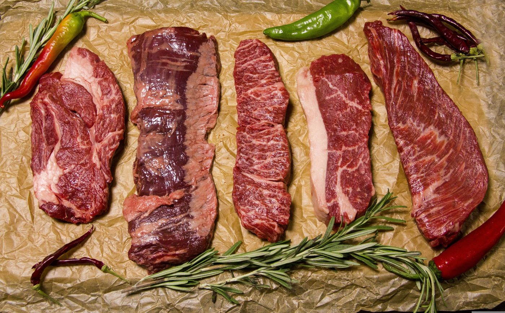
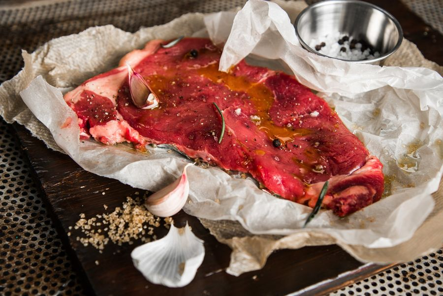
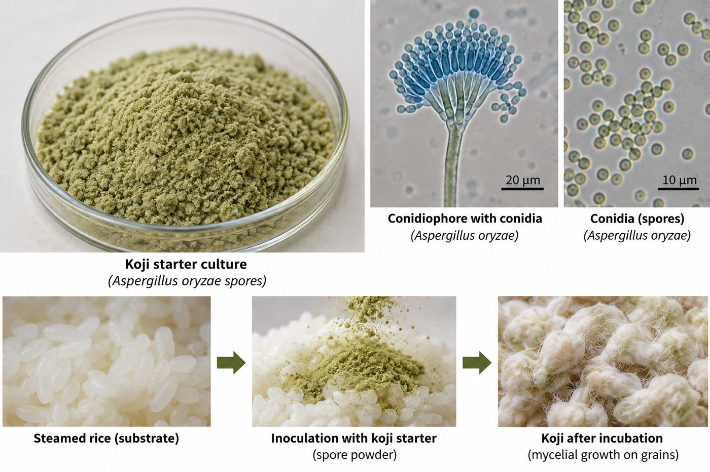
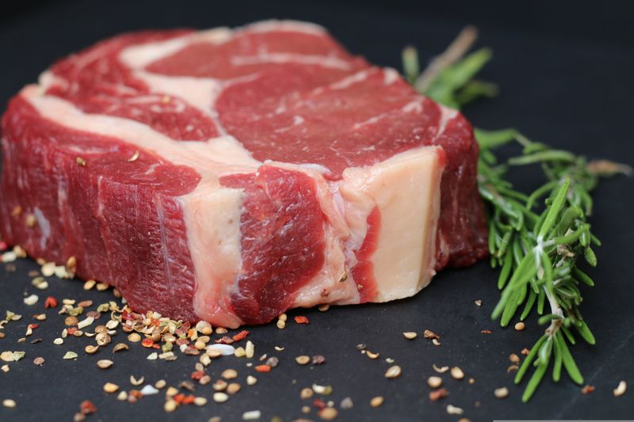
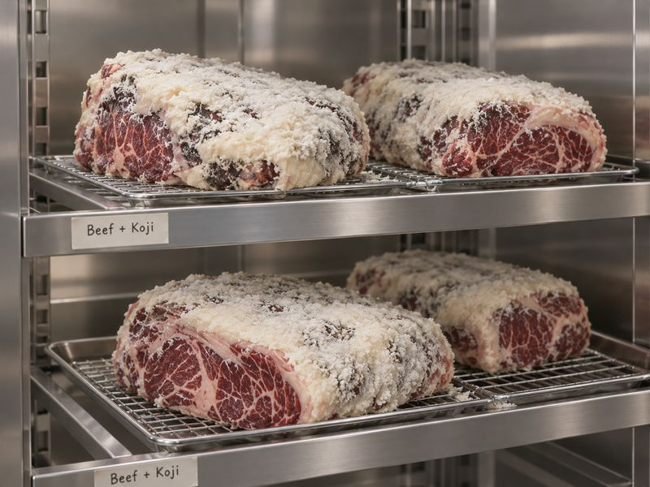
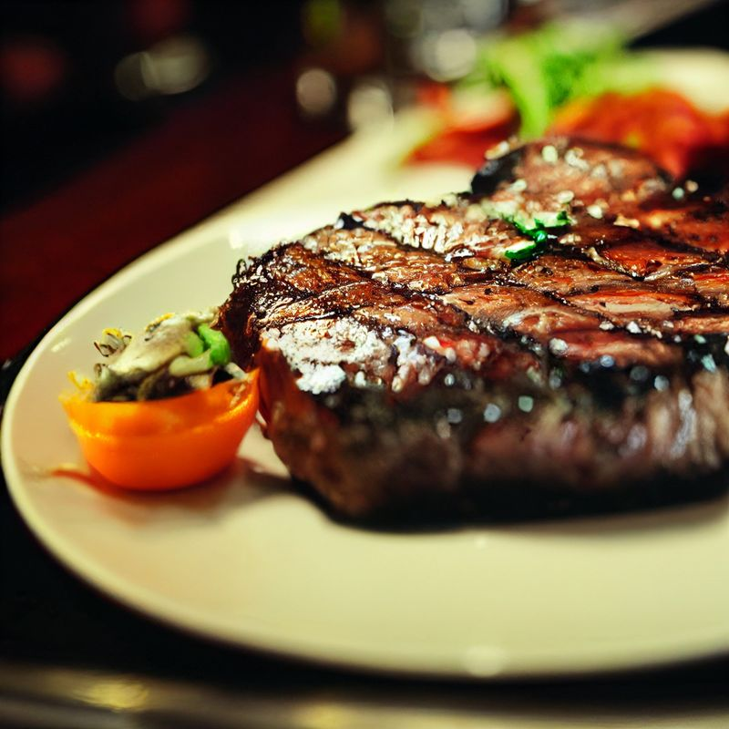
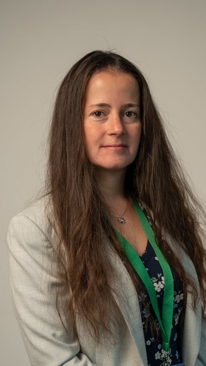
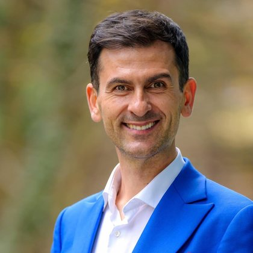
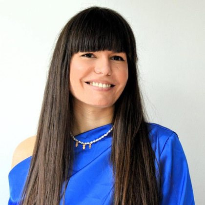
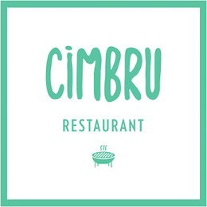

O tehnică veche, o materie primă nouă
Koji este o cultură de Aspergillus oryzae, folosită în mod tradițional în alimente fermentate pe bază de cereale și soia. Proteazele și lipazele pe care le produce eliberează aminoacizi liberi, peptide și compuși de aromă. Carnea devine mai fragedă, iar gustul umami se intensifică.
Procesul este puțin documentat pentru carnea de porc și de vită, mai ales în privința compușilor formați și a siguranței alimentare. Proiectul dezvoltă și validează două aplicații tehnologice pe care restaurantul Cimbru le va integra în propria bucătărie.
Cercetarea este realizată de o echipă a Facultății de Știința și Tehnologia Alimentelor din cadrul USAMV Cluj-Napoca, de la încercările de laborator până la validarea în condiții reale de utilizare.
Durata procesării


Ce ne propunem
O tehnologie controlată de fermentare cu koji pentru preparate din carne de porc și de vită, care îmbunătățește calitatea senzorială, scurtează maturarea și crește siguranța și stabilitatea microbiologică.
Dezvoltarea și optimizarea procesului
Stabilirea parametrilor tehnologici (tipul și doza culturii, timp, temperatură, umiditate) pentru două aplicații: carnea de porc, pentru frăgezire mai rapidă și gust umami, și carnea de vită, pentru complexitate aromatică, textură și stabilitate.
Caracterizare biochimică și microbiologică
Parametri fizico-chimici (pH, activitatea apei, compoziție proximată, culoare), analize microbiologice pentru siguranța alimentară, efectul tratamentului termic și profilul compușilor formați (aminoacizi liberi, peptide, metaboliți), inclusiv prin HPLC.
Evaluare senzorială și validare
Textura, aroma, gustul și acceptabilitatea generală, evaluate printr-un test hedonic în 9 puncte, corelate cu datele analitice și comparate cu metodele tradiționale de procesare.
Transfer tehnologic și valorificare
Protocoale tehnologice, fișe tehnice și ghiduri de implementare, precum și validarea aplicațiilor în condiții reale de utilizare la Cimbru.
Din laborator în bucătărie în 6 luni
Protocoale de fermentare
Dezvoltarea și optimizarea protocoalelor pentru carnea de porc și de vită.
Șarje experimentale
Obținerea de șarje de produse fermentate, alături de probe martor.
Caracterizare și evaluare
Analize fizico-chimice, microbiologice și biochimice, urmate de evaluarea senzorială.
Validare și transfer
Validare în bucătăria Cimbru, fișe tehnice de produs și transfer către beneficiar.



Imagini ilustrative. Fotografiile șarjelor proprii ale proiectului vor fi adăugate pe măsură ce lucrările avansează.
Ce rămâne după proiect
- cel puțin două protocoale de fermentare validate experimental;
- fișe tehnice de produs și ghiduri de implementare pentru beneficiar;
- rapoarte de cercetare privind compoziția, siguranța și calitatea senzorială a produselor;
- o tehnologie la TRL 5, integrată în activitatea restaurantului.
Rezultate obținute: rezumat public, la finalul proiectului
Diseminare: articole, lucrări la conferințe, evenimente
Cercetătorii
Patru cercetători ai Facultății de Știința și Tehnologia Alimentelor, USAMV Cluj-Napoca, cu activitate în biotehnologie alimentară, microbiologie aplicată și fermentare controlată.

Dr. Bernadette-Emőke Teleky
Cercetător științific gradul II. Are două doctorate, în Inginerie Mecanică (2016) și în Biotehnologie (2025, summa cum laude), și lucrează în domeniul fermentației în mediu solid și submers, al valorificării subproduselor agroindustriale și al compușilor bioactivi. A coordonat proiectul postdoctoral Bio-Cycle, privind producția de acid itaconic din subproduse ale industriei alimentare, și este autoare a peste 60 de publicații indexate.

Prof. Dr. Dan Cristian Vodnar
Profesor de biotehnologie alimentară și președinte al Senatului USAMV Cluj-Napoca. Inclus în fiecare an, din 2020, în topul celor mai citați 2% cercetători din lume (Stanford University și Elsevier), cu un indice h de 70 și peste 250 de publicații. Grupul său a dezvoltat simbioticul Echibiotic și a primit Premiul „Gheorghe Ionescu-Șișești” pentru Biotehnologie la Gala Cercetării Românești 2024.

Dr. Lavinia-Florina Călinoiu
Lector de biotehnologie alimentară, chimie alimentară și gastronomie moleculară, doctor în Biotehnologie Alimentară (2019). Coordonează proiectul Horizon Europe MSCA Staff Exchanges PURE-WAY, privind valorificarea deșeurilor agroalimentare, a condus un proiect național privind fortificarea in situ cu vitamina B12 a subproduselor din cereale și evaluează propuneri pentru Comisia Europeană. A publicat 45 de articole științifice.
Dr. Gheorghe-Adrian Martău
Lector de tehnologii fermentative (malț și bere; vin, oțet și produse distilate; biotehnologii speciale), doctor în Biotehnologie Alimentară, cu distincția summa cum laude. Conduce un proiect național pentru echipe tinere privind producția in situ de lovastatină printr-un bioproces hibrid fermentativ-enzimatic și lucrează în domeniul fermentației în mediu solid și al valorificării subproduselor agroindustriale.
Un restaurant și o universitate

Cimbru · CIMBRU GOURMET SRL
Cimbru a pornit ca food truck în Cluj-Napoca și a devenit restaurant și serviciu de livrare. Din toamna lui 2021, chef Nicolae Crăciun conduce și Cimbru Author Cuisine, pe strada Emil Isac 11, un restaurant casual fine dining al cărui meniu scurt se schimbă în fiecare săptămână, după sezon, și care lucrează îndeaproape cu producători locali.
În 2026 a devenit primul restaurant din România inclus în ghidul internațional We're Smart Green Guide, cu un calificativ de o ridiche, și s-a alăturat asociației JRE (Jeunes Restaurateurs).
Responsabil din partea beneficiarului: Nicolae Crăciun


USAMV Cluj-Napoca
Universitatea de Științe Agricole și Medicină Veterinară Cluj-Napoca, fondată în 1869. Lucrările se desfășoară la Facultatea de Știința și Tehnologia Alimentelor, cu personalul și infrastructura de cercetare proprii ale universității.
- Cod proiect
- PN-IV-P7-7.1-CI-2025-0166
- Contract de finanțare
- nr. 3CI/2026
- Perioada de implementare
- 6 iulie - 31 decembrie 2026
- Valoare totală
- 50.000 lei
- Finanțare publică
- 45.000 lei
- Contribuția beneficiarului
- 5.000 lei
Date de contact
Dr. Bernadette-Emőke Teleky
Facultatea de Știința și Tehnologia Alimentelor, USAMV Cluj-Napoca
Calea Mănăștur 3-5, 400372 Cluj-Napoca, România